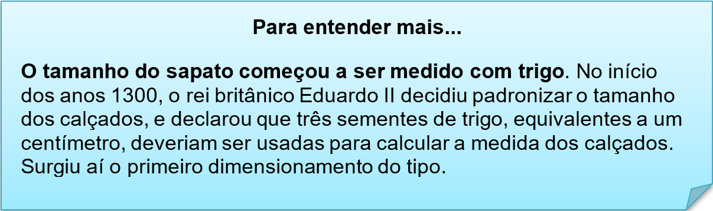
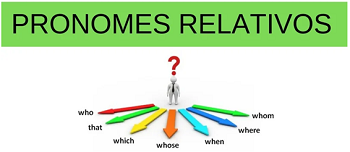

Capítulo 3: Footwear Sector – Setor Calçadista
A shoe is an item of footwear intended to protect and comfort the human foot while the wearer is doing various activities. They were originally created simply to protect the wearers feet. In modern times, shoes are also used as a fashion item. Traditionally, shoes have been made from leather, wood or canvas, but they are also made from rubber, plastics, and other petrochemical-derived materials. Footwear comes in a wide variety of colors, shapes, sizes, and uses. Athletic shoes, boots, dress shoes.
Vamos expandir nossos conhecimentos no setor calçadistas. Conheceremos novas palavras relacionadas, tipos de sapatos, curiosidades e partes que compõem essa peça indispensável no nosso dia a dia. Leia com atenção a tradução do texto norteador da unidade.
Um sapato é um item de calçado destinado a proteger e confortar o pé humano enquanto o usuário realiza várias atividades. Eles foram originalmente criados simplesmente para proteger os pés dos usuários. Nos tempos modernos, os sapatos também são usados como um item de moda. Tradicionalmente, os sapatos são feitos de couro, madeira ou lona, mas também são feitos de borracha, plástico e outros materiais derivados de petroquímicos. O calçado é fornecido em uma ampla variedade de cores, formas, tamanhos e usos. Sapatos esportivos, botas, sapatos sociais.

Contextualizando – Tipos de sapatos

Na dica da nossa biblioteca, temos o dicionário de sapatos, que reuni termos calçadistas para ensinar as peças e os termos comerciais que você precisa conhecer. Além de ser um manual de como fazer sapatos.
Já que falamos sobre manuais de como fazer sapatos, vamos conhecer as partes que compõem os tênis
Curiosidades sobre sapatos
Há três sistemas básicos universais de tamanhos de sapatos, são eles: Inglês, Americano e Francês.
Até a metade do século XIX, os dois pés do sapato eram iguais. O primeiro par feito com pé direito e pé esquerdo apareceu entre 1801 e 1822, na Filadélfia.
Sapato era objeto de luxo. A fabricação em massa só começou a partir de 1760, quando foi construída a primeira fábrica de sapato em Massachusetts, Estados Unidos.
Assista ao vídeo sobre a origem da profissão SHOEMAKER (sapateiro) e veja a importância dessa profissão
Shoemaker - sapateiro
Shoemakers (also known as cordwainers) may produce a range of footwear items, including shoes, boots, sandals, clogs and moccasins. Such items are generally made of leather, wood, rubber, plastic, jute or other plant material, and often consist of multiple parts for better durability of the sole, stitched to a leather upper part.
No texto informativo sobre a importância da profissão de sapateiro, há palavras em destaque, que são materiais que os sapatos são produzidos, são eles:
Leather – couro
Wood – madeira
Rubber – borracha
Plastic – plástico
Jute – juta (tipo de tecido)
Frase que usamos no setor calçadista
I’m just looking, thank you. (Estou só olhando, obrigado/a.)
It doesn’t fit. (Não cabe.)
It’s too big. (É grande demais.)
It’s too small. (É pequeno demais.)
Do you have any others? (Você tem outros?)
Vou levar este/a. (I’ll take this one.)
How much is it? (Quanto é?)
Reconstruindo conhecimentos – pronomes relativos
Os pronomes relativos em inglês (relative pronouns) são palavras utilizadas como sujeito ou objeto em relação ao verbo principal. Na frase, eles fazem referência a um termo que já foi citado anteriormente.
Quando exercem a função de sujeito, os pronomes relativos vêm acompanhados por um verbo. Por sua vez, se exercem a função de objeto, são seguidos por um substantivo ou pronome.
Confira abaixo uma tabela com os principais pronomes relativos:
Aplicando ao nosso vocabulário
The man who lives here is a shoemaker . (O homem que vive aqui é sapateiro.)
The girl about whom you are talking is my saleswoman. (A garota de quem você está falando é minha vendedora.)
The bride needs to decide which shoes to wear. (A noiva precisa decidir qual sapato usar.)
I know where the flipflops are. (Eu sei onde estão os chinelos.)
O que aprendi
• Nesta unidade aprendemos o vocabulário do setor calçadista;
• Aprendemos sobre materiais usados na produção de sapatos;
• Vimos a história da profissão de sapateiro;
• Aprendemos expressões e frases curtas usadas na compra e venda de sapatos
• Na gramática, aplicamos os pronomes relativos.
Praticando
Leia o texto e diga quais tipos de footwear o sapateiro produz.
Shoemakers (also known as cordwainers) may produce a range of footwear items, including shoes, boots, sandals, clogs and moccasins.
Observe a imagem dos sapatos e nomeie as partes faltantes em inglês. Consulte nosso material.
Usando os pronomes relativos, produza escritas usando como base nosso vocabulário calçadista;

The man needs to decide which shoes to wear. (O homem precisa decidir qual sapato usar.)
_______________________________________________
_______________________________________________
_______________________________________________